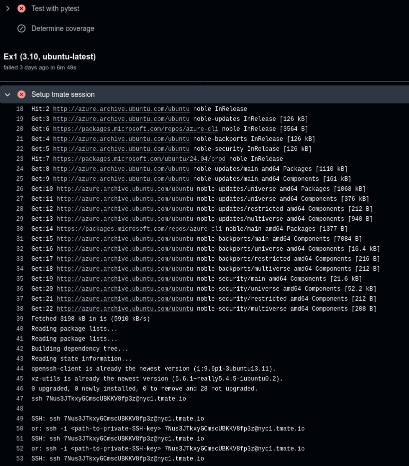

![]()
If you work with remote computer systems regularly you are probably familiar with SSH for making your connections. You might also have come across tmux, its forktmate or the GNU programme screen all of which allow you to maintain and/or share a session on a remote system.

The ability to connect remotely to a machine is invaluable, but what does that have to do with debugging GitHub Actions? You have your development environment on your local computer where you have made sure all tests pass and the documentation builds. Well often tests are run on a multitiude of operating systems and you may not always have access to these locally, even with the availability of emulators, for example licensing issues may prevent you from emulating some systems.
This is where tmate comes in handy because there is a GitHub Actions which sets up tmate on the runner that was spun on the GitHub servers and if you’ve setup your SSH keys correctly then you can connect to this machine and set about debugging errors.
The official documentation is comprehensive and well written and I would recommend you read through it if you want to know more. Here I give a brief overview of how I use tmate in my work. Its pretty basic but has been invaluable.
Setup and Configuration
SSH Keys
It is essential that you have your public SSH key stored in your GitHub account. A while back GitHub started enforcing this for development so chances are you have already got this setup, if not follow the instructions . GitHub have an excellent series of posts on connecting to GitHub with SSH.
Work through those if you need to setup SSH. Once you have setup your SSH keys you are ready to add the tmate step to your GitHub Action.
Testing on multiple OS’s and versions
You can configure your GitHub Action to run on a range of operating systems by setting up single or multi-dimension matrix under the strategy. The example below1 tests multiple operating systems and multiple versions of Python.
jobs:
build:
name: Test (${{ matrix.python-version }}, ${{ matrix.os }})
runs-on: ${{ matrix.os }}
strategy:
matrix:
os: ["ubuntu-22.04", "ubuntu-20.04", "ubuntu-latest", "macos-latest", "windows-latest"]
python-version: ["3.10", "3.11", "3.12", "3.13"]
steps:
- uses: actions/checkout@v4
- name: Set up Python
uses: actions/setup-python@v5
with:
python-version: ${{ matrix.python-version }}
...tmate GitHub Action
To use tmate to debug your workflow you need to add the action-tmate to the .github/workflows/<action>.yaml you wish to debug. There are a lot of options available but a very basic configuration is shown below and you should add this as the last step in your workflow.
steps:
...
- name: Setup tmate session
if: ${{ failure() }}
uses: mxschmitt/action-tmate@v3
timeout-minutes: 5This will use the mxschmitt/action-tmate step only if there is a failure and will make the SSH session on the runner available for just 5 minutes. Its quite likely that it will take me than 5 minutes to work out what is causing the error and so after have encountered an error I typically increase this amount to allow me longer to work on debugging the problem.
Usage
Once you have staged and committed the changes to you have made to your workflow to include the action-tmate step using it is pretty straight-forward. If everything runs ok you will see this in your workflows log because the step only runs on failure.
If however there is a failure in one of the preceding steps of your workflow then the tmate job kicks in and you will see the following in your jobs logs.

tmate kicks in on failure of a preceding jobThe key bit of information here are the lines at the bottom which are repeated…
2025-06-03T15:29:21.4815179Z openssh-client is already the newest version (1:9.6p1-3ubuntu13.11).
2025-06-03T15:29:21.4816354Z xz-utils is already the newest version (5.6.1+really5.4.5-1ubuntu0.2).
2025-06-03T15:29:21.4817296Z 0 upgraded, 0 newly installed, 0 to remove and 28 not upgraded.
2025-06-03T15:29:22.4080716Z ssh 7Nus3JTkxyGCmscUBKKV8fp3z@nyc1.tmate.io
2025-06-03T15:29:22.4113791Z
2025-06-03T15:29:22.4125076Z SSH: ssh 7Nus3JTkxyGCmscUBKKV8fp3z@nyc1.tmate.io
2025-06-03T15:29:22.4125623Z or: ssh -i <path-to-private-SSH-key> 7Nus3JTkxyGCmscUBKKV8fp3z@nyc1.tmate.io
2025-06-03T15:29:27.4141023Z SSH: ssh 7Nus3JTkxyGCmscUBKKV8fp3z@nyc1.tmate.io
2025-06-03T15:29:27.4141669Z or: ssh -i <path-to-private-SSH-key> 7Nus3JTkxyGCmscUBKKV8fp3z@nyc1.tmate.ioThese messages are shown after the mxschmitt/action-tmate job has installed tmate on the GitHub runner (/remote server) and it is now available for you to connect to using SSH. If you have your SSH key loaded in a Keychain2 or other SSH key manager then you can use the first form.
ssh 7Nus3JTkxyGCmscUBKKV8fp3z@nyc1.tmate.ioIf you get a Permission Denied error then try the second form, substituting <path-to-private-SSH-key> for the private key that corresponds to the one you have on your GitHub account.
ssh -i <path-to-private-SSH-key> 7Nus3JTkxyGCmscUBKKV8fp3z@nyc1.tmate.ioOnce connected you have all the tools in the current version of the host operating system along with those your job installed, including the package and its dependencies you are testing or using in the workflow that has failed (remember this is the machine on which the job failed and your workflow sets up the environment for testing/building 😉).
You can now set about debugging why the job failed in more detail. You may want to run pytest --lf -x to re-run the last failed jobs and start poking around. If you use pdb to debug then you can add breakpoint() at the point you want to start debugging.
Astute readers will have noticed that you are time-limited as the configuration for this step in the workflow specified timeout-minutes: 5 which means the runner and your SSH connection will terminate after five minutes. Typically it’s going to take you longer to solve your problem so you should tweak your /.github/workflow/<job>.yaml to increase this value on your local copy, commit and push the changes to your remote branch on GitHub where they will trigger another run of your jobs which should fail and you will have longer to spend connected debugging. Once you’ve solved the problem reduce it back to a few minutes.
Conclusion
Being able to remotely connect to GitHub runners allows you to investigate what went wrong quickly on operating systems you may not have at your disposal locally. Its a quick and efficient way to investigate in finer detail why tests and builds might be failing on a specific operating system or version of the software you are testing.
Links
- mxschmitt/action-tmate GitHub page for the
tmateaction. - Debug your GitHub Actions by using tmate | action-tmate documentation for the
tmateaction. - lhotari/action-upterm a fork of the
tmateaction.
SSH and GitHub
Footnotes
This is based on the TopoStats
tests.yamlpackage that I work on.↩︎Keychain’s are a convenience programmes for managing
ssh-agentthat are long-running. They mean you can enter your SSH password once, typically on login, and your private keys are held in memory and used whenever you attempt to connect via SSH to a remote machine.↩︎
Reuse
Citation
@online{shephard2025,
author = {Shephard, Neil},
title = {Debugging {GitHub} {Actions} with Tmate},
date = {2025-06-10},
url = {https://blog.nshephard.dev/posts/tmate/},
langid = {en}
}